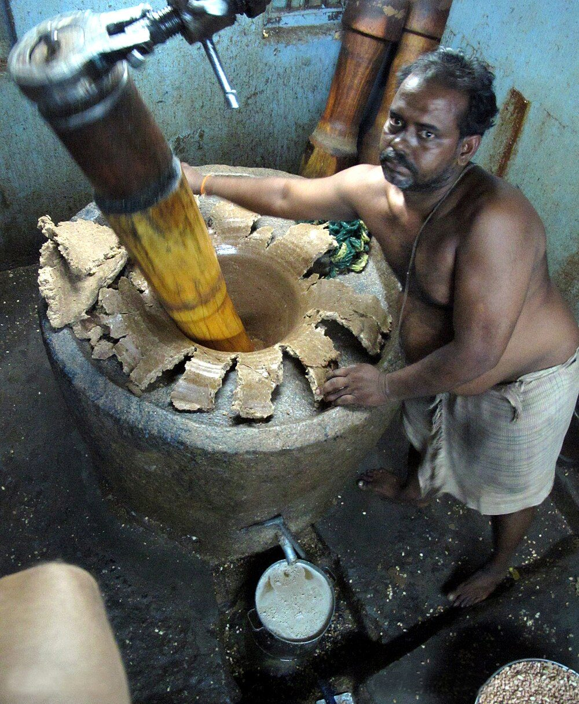

Chapter 14: Dairy and Food Processing¶
14.1 From Field and Herd to Kitchen¶
Between the harvest and the meal lies a great body of practical knowledge. Milk has to be turned into products that keep in a hot climate; grain has to be threshed, husked, pounded, ground, parched or parboiled; oilseeds have to be crushed and cane juice boiled down; fruits, vegetables, fish and meat have to be dried, salted or pickled against the lean season. Most of this knowledge was carried by households — very largely by women — and by specialist castes of oil-pressers, confectioners and toddy-tappers, and only a small part of it was written down. This chapter follows it through dairying, fermentation, grain, oil, sugar and preservation, and then turns to the cookery texts and to the rules of purity that governed who might cook for whom. It draws throughout on the historical work of K. T. Achaya (Achaya 1994, 1998). Cattle and other livestock are treated in Chapter 13, the crops themselves in Chapter 9, and the dietetic and medical uses of foods in Volume 13, Āyurveda.
14.2 Milk in Early India¶
In the Ṛgveda cattle are the chief form of wealth, and milk (payas, kṣīra), curd (dadhi) and ghee (ghṛta) run through its imagery. The poets marvel that the cow, herself “raw”, holds “cooked” milk within her; they compare the dawns and the rain-clouds to milch cows and poetic inspiration to milking; ghee is the substance that makes the sacrificial fire blaze (Jamison and Brereton 2014). The history of the cow in Vedic society, including the sacrifice and eating of cattle and the later growth of cow veneration, is set out in Chapter 13; here the concern is with milk as food and ritual substance.
Dairy products were indispensable to the Vedic ritual. The daily agnihotra, offered morning and evening by the householder who maintained the sacred fires, was an offering of hot milk. Ghee (in ritual contexts usually called ājya) was poured into the fire in most offerings and was used to anoint the offering cakes and the implements. The Pravargya rite centred on the gharma, milk heated with ghee in a clay pot until it seethed. Another offering, the āmikṣā, was made by adding curd or sour milk to hot milk so that it separated into a solid curd and a liquid whey (vājina) — evidence that coagulation of hot milk with an acid medium was known in the Vedic period, even though later custom avoided deliberately “splitting” milk for food (Achaya 1994).
The churning of curd into butter supplied one of the great images of Indian literature. In the epic and Purāṇic myth of the churning of the ocean (samudramanthana), gods and demons use a mountain as the churning stick and a serpent as the rope, and draw out the nectar of immortality as a dairywoman draws butter from curd. The Śvetāśvatara Upaniṣad (1.15) says that the self is to be found within oneself as oil is found in sesame seeds, ghee in curd, water in springs and fire in the fire-drills — an image that joins the dairy and the oil-press (Olivelle 1998). In the devotional literature of Kṛṣṇa, the butter-stealing cowherd god of Vraja, the dairy household becomes the setting of divine play.
14.3 The Classical Milk Products¶
Sanskrit texts from the late Vedic period onwards distinguish a sequence of products, each made from the one before: milk (kṣīra) is boiled and set as curd (dadhi); curd is churned to give fresh butter (navanīta) and buttermilk (takra); butter is heated to give ghee (ghṛta). The method is still used in Indian villages: the curd is churned with a wooden stick (Hindi mathānī) spun back and forth by a cord, and the butter is slowly heated until its water has evaporated and the milk solids have browned and settled, when the clear fat is poured off. Because it contains almost no water, ghee keeps for long periods without refrigeration; it was the form in which the surplus milk of the rainy season could be stored and traded. The Pali Vinaya allows Buddhist monks five “medicines” or tonics that could be stored and taken after noon — ghee, fresh butter, oil, honey and molasses — a list that shows which processed foods were valued for their keeping qualities.
Table 14.1 lists the principal terms. Their meanings shift between texts and periods, and some of the rarer ones are not clearly defined.
| Term | Meaning |
|---|---|
| kṣīra, payas, dugdha | Milk |
| pīyūṣa | Colostrum, the first milk after calving |
| dadhi | Curd (milk set with a starter) |
| mastu | The whey that separates from curd |
| takra | Buttermilk; Āyurvedic texts distinguish several kinds (ghola, mathita, udaśvit and others) by whether butter is removed and how much water is added |
| navanīta | Fresh butter churned from curd |
| ghṛta, sarpis, ājya | Ghee (clarified butter); ājya especially in ritual |
| āmikṣā, vājina | Vedic: the curd and whey obtained by adding curd or sour milk to hot milk |
| kilāṭa, kūrcikā | Milk solids obtained by heating or curdling milk; the exact preparations are not always clear |
| pāyasa | Rice boiled in milk, usually sweetened (Hindi khīr) |
14.3.1 Khoa, Chhena and the Sweets of Bengal¶
Milk boiled down slowly in an open pan, with constant stirring, becomes a thick paste, khoa or māvā; reduced less far, with the skin repeatedly lifted, it gives rabṛī. Khoa, with sugar, is the base of many north Indian sweets such as peḍā and barfī. Whether the Sanskrit kilāṭa corresponds exactly to khoa is uncertain, but thickened milk sweets are old (Achaya 1998).
Milk deliberately curdled with an acid — lime juice, sour whey — and drained gives chhenā (chānā) in eastern India and, pressed into blocks, panīr in the north-west. Achaya argued that the old reluctance to “spoil” milk by splitting it held back the use of such acid-curd cheeses in Indian cookery, and that chhena-making in Bengal probably owed something to the Portuguese, who settled in the Hugli region in the sixteenth and seventeenth centuries and made cottage cheese there; the great chhena sweets of Bengal — sandeś in its modern form, rasagollā and many others — appear to be developments of the eighteenth and nineteenth centuries (Achaya 1994, 1998). The argument is plausible rather than proven. The origin of the rasagollā itself is contested between West Bengal, which credits a nineteenth-century Calcutta sweet-maker, and Odisha, which associates a related sweet with the Jagannātha temple at Puri. The word panīr is Persian, and the north Indian product is generally associated with Persianate cuisine.
14.4 Dairy in Āyurvedic Dietetics¶
Cross-Reference: Food and Medicine in Volume 13
The dietetic theory of Āyurveda — the classification of foods by taste and potency, the rules of seasonal diet, incompatible foods and the medicinal use of ghee, milk and fermented preparations — is treated in Volume 13, Āyurveda.
Āyurvedic dietetics gives milk products a large place. The Caraka-saṃhitā lists the milks of eight animals — sheep, goat, cow, buffalo, camel, elephant, mare and woman — and in its chapter on food and drink (Sūtrasthāna 27) devotes one of its twelve groups of foods to milk and milk products (gorasa), alongside groups for grains, pulses, meats, vegetables, fruits, wines and other drinks (madya), sugarcane products (ikṣu) and cooked preparations (kṛtānna) (Sharma 1981). Each product is described by its taste, potency and action on the three doṣas. Curd is hedged with restrictions — it is not to be eaten at night or heated, for example — while buttermilk is praised as a digestive. Ghee is valued as the vehicle of medicines: herbs are cooked in it to make medicated ghees, on the principle that ghee takes up the qualities of what is processed with it. Caraka also lists incompatible combinations of foods (viruddhāhāra), of which milk with fish is the most famous, and among the factors that determine the effect of food (Vimānasthāna 1) he gives a place to processing (karaṇa): cooking, soaking, churning or storage change a food’s qualities (Sharma 1981; Wujastyk 2003). These are the concepts of a medical system; the claims made for particular foods within it are claims about doṣas, not results of modern nutritional research.
Health and Safety Note
Traditional praise of dairy and fermented foods should not be read as medical advice. Ghee and butter are rich in saturated fat; claims that ghee lowers cholesterol or prevents heart disease, or that particular home-fermented foods cure illness, are not established by reliable evidence. Unboiled milk can transmit tuberculosis, brucellosis and other infections, and poorly stored grains and oilseeds can carry fungal toxins. Illicitly distilled liquor has repeatedly caused mass poisoning in India through methanol contamination, and mustard oil adulterated with the seed oil of the weed Argemone mexicana has caused outbreaks of epidemic dropsy. The consumption of pañcagavya is discussed, with a safety note, in Chapter 13.
14.5 Dairying Communities and Modern Cooperatives¶
In most of India milk was produced in small quantities by farming households, and the daily work of milking, setting, churning and making ghee fell mostly to women. Alongside them were castes and communities for whom cattle and dairying were a hereditary occupation and an element of identity: the Ahīr, Gvālā and Yādava groups of the north, who claim descent from Kṛṣṇa’s cowherd clan; the Gollas of Andhra and Karnataka; the Gavlīs of Maharashtra; the pastoral Rabārī, Maldhārī and Gujjar communities of the west and north-west; and the Toda of the Nilgiris, whose buffalo dairies are graded temples and whose dairymen are priests (Chapter 13). In towns, confectioners (the Halvāī of the north, the Moirā of Bengal) turned milk and sugar into sweets.
Modern organised dairying owes most to a cooperative. In the Kaira (Kheda) district of Gujarat, milk producers who sold to a private dairy at Anand holding the contract for Bombay’s milk supply complained of low and uncertain prices. With the encouragement of Vallabhbhai Patel and under the leadership of Tribhuvandas Patel, they formed the Kaira District Cooperative Milk Producers’ Union in 1946. Verghese Kurien, a dairy engineer who came to Anand in 1949, became its manager; the union learned to make milk powder from buffalo milk, and its products were sold under the brand name Amul. Its structure — village societies owned by the producers, which collect and test milk twice daily and pay according to fat content, federated into a district union that runs the processing plant — became known as the “Anand pattern”.
The National Dairy Development Board, set up at Anand in 1965 with Kurien as chairman, spread this pattern through Operation Flood, launched in 1970. The programme used the proceeds of sale of dairy commodities donated by the European Economic Community through the World Food Programme to build cooperative dairies in milk-producing districts and to link them to the cities in a national milk grid; by the end of the twentieth century India had become the largest milk producer in the world. Critics argued that donated commodities competed with local producers, and that urban consumers and better-off producers benefited more than the landless and women (George 1985). Its importance is nevertheless beyond dispute: it brought very large numbers of small producers, many of them households owning only one or two animals, into an organised market on their own terms.
14.6 Fermentation¶
14.6.1 Curd and Sour Gruels¶
The simplest and most widespread fermentation is the setting of curd. Each household kept a little curd from one day to inoculate the next day’s milk — the practice microbiologists call back-slopping — so that household cultures of lactic acid bacteria were carried on, and sometimes given to new households, for long periods. Sour gruels made by fermenting rice water or cooked grain, called kāñjika or dhānyāmla in Sanskrit, are used in Āyurvedic preparations and as a sour base in cooking. In eastern India cooked rice left overnight in water (Odia pakhāḷa, Bengali pāntābhāt) is eaten in the hot season; in north India a sour fermented drink of black carrot and mustard (kāñjī) is made in winter; in Karnataka and Tamil Nadu fermented gruels of finger millet (ambali, kūḻ) are everyday foods of the poor.
14.6.2 Fermented Batters and the History of Idli¶
The steamed cakes (idli) and griddle pancakes (dosa) of south India are made from a batter of rice and black gram (Tamil uḷuntu, Hindi uṛad) soaked, ground and left to ferment overnight. Their early history calls for caution. Achaya noted that the Kannada Vaḍḍārādhane of Śivakoṭyācārya (920 CE) mentions iḍḍalige, and that the Lokopakāra of Cāvuṇḍarāya (c. 1025 CE) describes its preparation from black gram soaked in buttermilk, ground and seasoned — without rice, and without any mention of fermenting the batter; the Mānasollāsa (1131 CE) describes an iḍḍarikā also made from black gram (Achaya 1994, 1998; Shrigondekar 1925). Achaya therefore suggested that the fermented, steamed rice-and-pulse idli is a later development, and speculated that the technique might have come from Indonesia, where comparable fermented and steamed foods were made, at a time when south Indian dynasties had close contact with Southeast Asia. The early texts may simply not record a fermentation that cooks took for granted; the question is open.
Other fermented batters are regional: the ḍhokḷā of Gujarat, the appam of Kerala (traditionally leavened with palm toddy), the seli roṭī of the Nepali-speaking Himalaya. The jalebī, a fermented wheat batter fried and soaked in syrup, takes its name and probably its origin from the West Asian zalābiya (Achaya 1998). In the eastern Himalaya and the North-East, fermented soybean (kinema in Sikkim and Darjeeling, akhunī in Nagaland), fermented bamboo shoot, fermented leafy vegetables (gundruk) and fermented fish are central to diet and identity, with histories of their own largely outside the Sanskrit textual tradition.
14.6.3 Fermented Drinks and Alcohol¶
Alcoholic drinks have a long and well-documented history in India. The Vedic texts distinguish soma, the pressed plant juice of the great sacrifices, from surā, a fermented drink made from grain. Surā was offered in certain rites, notably the Sautrāmaṇī, and yet the texts already regard it with suspicion as a source of disorder. The Arthaśāstra places the manufacture and sale of liquor under a state superintendent (surādhyakṣa) who controls where it may be drunk and by whom; it names several kinds of drink — medaka, prasannā, āsava, ariṣṭa, maireya and madhu (the last made from grapes) — and describes the preparation of a ferment or starter (kiṇva) (Kangle 1965; Olivelle 2013). Caraka’s madya group lists many drinks by source and quality, and self-fermented medicinal preparations (āsava, ariṣṭa) remain part of Āyurvedic pharmacy (Sharma 1981).
At the same time Dharmaśāstra counts the drinking of surā among the gravest sins for brahmins (Olivelle 2005), and Buddhist and Jain ethics forbid intoxicants to monks and lay followers alike; for Jains, honey and fresh butter are also forbidden, along with alcohol and meat, because of the minute life believed to arise in them. The resulting pattern is not one of a “dry” civilisation but of drink regulated by caste, sect, gender and occasion. Palm toddy (tāḍī), the fermented sap of the palmyra, date and coconut palms, was tapped and sold by specialist castes — the Īḻavas of Kerala, the Nāṭārs of Tamil Nadu, the Īḍigas of Andhra and Karnataka, the Bhaṇḍārīs of the Konkan and others — many of whom were held to be of low rank precisely because of this work, and whose nineteenth- and twentieth-century reform movements often included a rejection of it. Many Adivasi communities brew rice beer (hanḍiyā in Jharkhand and Odisha, and many named beers in the North-East) with starter cakes of rice and plants, and distil a spirit from mahua flowers (Madhuca longifolia); these drinks have ritual and social roles that colonial and later excise laws often criminalised. When distillation began in India is debated; distilled spirits were certainly being made in the medieval period (see Chapter 18).
14.7 Grain Processing¶
14.7.1 Pounding, Grinding and Parching¶
Grain must be freed from its husk and, for many uses, ground. The saddle quern, a flat lower stone on which grain is rubbed with a hand-held upper stone, is found at Neolithic and Harappan sites (Kenoyer 1998); the wooden mortar and pestle (ulūkhala and musala) and the winnowing basket (śūrpa) appear among the implements of the Vedic ritual, where rice for the offering cakes is husked before the fire. The rotary hand-mill (cakkī), two round stones of which the upper is turned by a peg handle, became the standard flour mill of the household in historical times; in the Himalaya, small water-driven mills (gharāṭ) ground the grain of whole villages. Husking rice with the pestle or, in Bengal and the east, with the foot-operated lever pounder (ḍhẽkī), and grinding wheat or millet at the hand-mill, were among the heaviest and most constant tasks of women. In Maharashtra the songs women sang at the grindmill (ovī) form a large oral literature. Power-driven rice and flour mills in the twentieth century relieved this labour, but also deprived many poor women who had husked rice for wages of their livelihood.
Several old preparations involve parching. Saktu (Hindi sattū) is flour of roasted barley or, later, of roasted gram, eaten mixed with water; the Ṛgveda (10.71.2) compares the wise who refine speech with their minds to men cleaning saktu through a sieve (Jamison and Brereton 2014). Parched or popped grain (lāja) is offered into the fire in the Hindu wedding rite and remains a common food as puffed rice (muṛī, kurmurā, pori). Flattened rice (pṛthuka; Hindi ciūṛā, Marathi pohe, Tamil aval) is made by soaking or parboiling paddy, heating it and pounding it flat while warm; it needs no further cooking, and the gift of a handful of flattened rice by the poor brahmin Sudāmā to his friend Kṛṣṇa in the Bhāgavata Purāṇa has made it the emblem of the humble offering.
14.7.2 Parboiling and Malting¶
In much of eastern and southern India paddy is parboiled before husking: it is soaked, steamed or boiled, and dried, and only then milled. Parboiled grain is harder, breaks less in pounding and milling, keeps well, and has a texture and flavour preferred where it is eaten. Twentieth-century nutritional research found a further effect: some of the B vitamins, notably thiamine, migrate during parboiling into the grain, so that parboiled rice loses less of them in milling than polished raw rice. When the practice began is not known. Germinated grain was also used: sprouted, dried and ground finger millet (“ragi malt”) is a traditional food for infants in Karnataka and Tamil Nadu, and malted grain was used in brewing, though early Indian brewing practice is imperfectly known.
14.7.3 Storage¶
Grain was stored in large jars, in bins of unbaked clay or of wickerwork plastered with mud and dung (koṭhī), in underground pits in the drier regions and in granaries raised on posts in the wetter ones, often with neem leaves mixed in against insects (Chapter 12). The large buildings at Mohenjo-daro and Harappa long described as state granaries are now often interpreted as other kinds of public building (Kenoyer 1998; Possehl 2002). The storage of seed, as distinct from food grain, is treated in Chapter 9.
14.8 Oil Pressing¶
The commonest cooking and lamp oils of India were pressed from sesame (tila, from which comes the general Sanskrit word for oil, taila), mustard and rapeseed (sarṣapa), linseed (atasī), safflower (kusumbha), castor (eraṇḍa, used for lamps and as a purgative rather than for food) and, on the coasts, coconut (nārikela). Sesame was domesticated in South Asia and is found at Harappan sites (Fuller 2006). Groundnut, an American crop, became an important oilseed only from the nineteenth century (Chapter 9). The oil-cake left after pressing was fed to cattle and used as manure (Chapter 7).
The village oil mill, Hindi ghāṇī or kolhū, is a large mortar, usually cut from a tree trunk or built of stone, in which a heavy wooden pestle is turned by a bullock walking in a circle; the pestle grinds the seed against the side of the mortar, and the oil is drawn off while the cake remains. The same type of machine, with appropriate changes, was used to crush sugarcane. The ghāṇī is simple and can be made and repaired by village carpenters; the blindfolded bullock circling it all day became a proverbial figure of drudgery. The same mortar and pestle are also worked by machine (Figure 14.1).


Oil-pressing was the hereditary occupation of particular castes: the Telī of north and central India, the Ghāñcī of Gujarat, the Gāṇiga of Karnataka, the Vāṇiyar (Vāṇiya Ceṭṭiyār) of the Tamil country, among others. Many of these communities also traded in oil and grain, and some rose to prosperity. Their ritual status was generally low. The Manusmṛti groups the oil-presser with the butcher, the tavern-keeper and the brothel-keeper as persons from whom a brahmin should not accept gifts (Olivelle 2005), and in Jain ethics the operation of mills and presses is one of the occupations forbidden to lay followers because of the destruction of small life it involves. In some regions the oil-pressers were divided according to whether they themselves worked the press or only traded in oil, the latter claiming higher standing.
In the twentieth century power-driven expellers and, later, solvent extraction and refining largely displaced the bullock ghāṇī, despite Gandhian programmes that promoted improved bullock presses for rural employment. “Wood-pressed” oils have recently returned as a premium product; the claims made for their nutritional superiority are largely untested.
14.9 Sugar and Jaggery¶
Sugarcane as a crop, the graded Sanskrit vocabulary of sugar products and the derivation of English “sugar” and “candy” from Sanskrit śarkarā and khaṇḍa are discussed in Chapter 9. The processing followed a sequence that remained recognisable into the twentieth century. Cane was cut and crushed in a press — at first a mortar-and-pestle mill of the kolhū type, later mills with two or three vertical wooden or iron rollers turned by bullocks — and the juice (ikṣurasa) was boiled in shallow iron pans over a furnace fed with the dried crushed cane (bagasse). Scum was skimmed off, often with the help of vegetable clarifying agents, and the juice thickened in stages: to a syrup or treacle (phāṇita); to a mass that set on cooling into blocks or balls of jaggery (guḍa, Hindi guṛ); and, when the thickened mass was allowed to crystallise and the molasses drained away, to a coarse granular sugar (khaṇḍa, khāṇḍsārī) and, by further purification, to white crystalline sugar (śarkarā). Large clear crystals grown slowly on threads in a concentrated syrup give rock-sugar (miśrī).
This knowledge travelled: the Tang court’s mission to Magadha to learn sugar-boiling (Chapter 9) was followed by Chinese developments of its own (Mazumdar 1998). The Hindi word cīnī for white sugar is usually taken to refer to China, suggesting that the exchange later ran in the other direction as well. Jaggery was also made from the sap of the date palm (Bengali nalen guṛ) and the palmyra (Tamil karuppaṭṭi). Bengal and the Gangetic plain were great sugar-producing regions in the Mughal and colonial periods (Chapter 18); in the twentieth century vacuum-pan factories took over refined sugar, while jaggery and khāṇḍsārī remained village industries.
14.10 Preservation¶
Much Indian food processing aimed at carrying food through the dry season or the monsoon. The main methods were:
-
Drying. Grains and pulses were sun-dried before storage. Pastes of pulses were shaped into small cakes and dried (vaḍī, Kannada sanḍige, Tamil vaṭakam) or rolled into thin wafers (pāpaḍ) for frying later. Unripe mango was sliced and dried and ground (āmcūr). Fish were sun-dried and salted on every coast and along the great rivers (Bengali śuṭkī, Tamil karuvāṭu), and dried meat (Sanskrit vallūra) is named in the lexicons.
-
Salting. Salt, from sea pans on the coasts and from inland lakes and rock deposits, was used for fish, for limes and other fruits, and in most pickles. Salt was taxed by states from the Arthaśāstra onwards, and the British salt monopoly was the target of Gandhi’s Salt March of 1930.
-
Pickling. Fruits and vegetables — mango, lime, gooseberry (āmalaka), bamboo shoot and many others — were preserved with salt, oil, spices and sometimes sour agents and the sun. The common modern word acār is Persian, but salted and spiced preserves of fruits are older.
-
Cooking in fat and sugar. Ghee, oil and sugar syrup were themselves preservatives: sweets made with khoa or chhena keep only briefly, but sweets fried in ghee and soaked in syrup, or sugar-based sweets with little water, keep for days or weeks, and preserves of fruits in syrup (murabbā, a word of Arabic origin that came through Persian) became popular under the Indo-Islamic courts.
These are empirical methods. Their effect can be described in modern terms — drying, salt and sugar lower the water available to micro-organisms, and acid and oil exclude many of them — without implying that they were designed on that basis; and in a monsoon climate their limits were real.
14.11 Texts on Food and Cookery¶
The Upaniṣads already make food a theme of philosophical reflection: in the Taittirīya Upaniṣad Bhṛgu first perceives that brahman is food (annaṃ brahmeti vyajānāt, 3.2; Chapter 2). Practical cookery, however, is recorded mainly in much later works and in incidental descriptions in poetry, narrative, temple inscriptions and travellers’ accounts (Achaya 1994).
The richest early account is the section on food in the Mānasollāsa of the Cālukya king Someśvara III (1131 CE), the encyclopaedia of royal enjoyments described in Chapter 3 (Shrigondekar 1925). It describes the king’s meal: rice, pulses and vegetables; meat, including pork, game and fish, roasted, fried or cooked in sauces; breads and fried cakes; sweets of milk, grain, jaggery and ghee; and drinks. Its frank treatment of meat at a Hindu court is a useful corrective to the assumption that “traditional” Indian food was everywhere vegetarian. A little earlier the Kannada Lokopakāra of Cāvuṇḍarāya (c. 1025 CE), a compendium of useful knowledge, includes a section on cookery as well as on plants (Ayangarya 2006).
Several later Sanskrit works are devoted to cookery or dietetics, though their dates and authorship are often uncertain. The Pākadarpaṇa is attributed to Nala, the epic king who, in the Mahābhārata, served in disguise as charioteer and cook to King Ṛtuparṇa; the attribution is legendary and the text is probably medieval. The Kṣemakutūhala of Kṣemaśarman, usually placed in the sixteenth century, combines cookery with Āyurvedic dietetics. The Bhojanakutūhala of Raghunātha, generally assigned to the later seventeenth century in Maharashtra, is a compilation on foods and their qualities drawn from earlier dietetic and culinary sources. K. T. Achaya summarises the contents of all three (Achaya 1994); they are described here from his account.
The Indo-Islamic courts produced their own culinary literature. The Niʿmatnāma, an illustrated Persian book of recipes compiled for the sultans of Malwa at Mandu around 1500, records the dishes, perfumes and remedies of a cuisine that combined Persian and Indian elements; it has been translated by Norah Titley (Titley 2005). The Āʾīn-i Akbarī describes Akbar’s kitchen and gives recipes for the imperial table, from vegetarian dishes to pulāʾo and meat preparations (Abū’l-Faẓl 1873). Through such kitchens, and the cooks and confectioners of the Sultanate and Mughal cities, much of what is now thought of as “Indian” food took shape.
14.12 Food, Purity and Caste¶
Food in India has never been only nourishment; it has also been a principal medium through which caste rank was expressed and enforced. The Dharmaśāstras set out at length whose food a brahmin may and may not accept, and treat the acceptance of food from those of low status as polluting (Olivelle 2005). In practice, rules of commensality — who may eat with whom, who may cook for whom, from whose hands one may take water — were among the most closely watched boundaries between castes, and anthropologists working in twentieth-century villages found that the ranking of castes could be reconstructed from the transactions of food among them (Marriott 1968).
A central distinction in north India was between kaccā food, cooked in water (boiled rice, lentils), which was highly vulnerable to pollution and was normally accepted only from one’s own caste or a higher one, and pakkā food, fried in ghee or oil, which was less vulnerable and could be accepted more widely — one reason why ghee-fried foods were served at feasts where several castes were present, and why brahmin cooks were widely employed. At the bottom of the order, Dalit communities were excluded from shared wells and kitchens, and the eating of beef or of the flesh of dead cattle, forced on some by poverty and by the work of removing carcasses, was made a mark of their exclusion (Chapters 13 and 18). Vegetarianism itself carried caste meanings: it was a mark of high status for brahmins and many trading castes, and was adopted by groups seeking higher rank, while the majority of Indians, then as now, ate meat or fish when they could.
These rules were never uniform. They varied by region and sect, were relaxed in some devotional movements and pilgrimage centres — the shared food of the Jagannātha temple at Puri is the classic example — and were challenged by Buddhist, Jain, Sikh, Bhakti, Islamic and modern reform movements. The common kitchen (laṅgar) of the Sikh gurdwaras, at which all sit together to eat, was a deliberate rejection of caste commensality. Urban life has weakened the rules in public, though they remain powerful in marriage and the home.
Summary¶
Dairy products were central to Indian food and ritual from the Vedic period, and medical and lexical texts record a graded vocabulary of milk products. Acid-curdled cheeses and the chhena sweets of Bengal appear to be comparatively recent, possibly owing something to Portuguese example; the twentieth century brought the Anand cooperative of 1946 and Operation Flood from 1970. Fermentation produced curd, sour gruels, batters whose early history remains uncertain, and alcoholic drinks regulated by state, caste and sect. Grain was pounded, ground, parched, flattened and parboiled, mostly by women; oil was pressed in the bullock ghāṇī by castes of low ritual rank; Tang China sought India’s sugar-making knowledge; and drying, salting, pickling and cooking in fat and sugar carried food through the year. Cookery texts from the Mānasollāsa to the Āʾīn-i Akbarī record court cuisines, while rules of purity made food an instrument of caste. The knowledge was real and largely unwritten; the medical virtues claimed for it belong to Volume 13 and to critical evaluation.
Further Reading¶
Achaya (1994) is the standard historical survey of Indian food, and Achaya (1998) a reference work on individual foods and terms. Mazumdar (1998) places Indian sugar technology in an Asian context. Shrigondekar (1925) edits the Mānasollāsa, and Abū’l-Faẓl (1873) translates the Āʾīn-i Akbarī. On dietetics see Sharma (1981) and Volume 13.